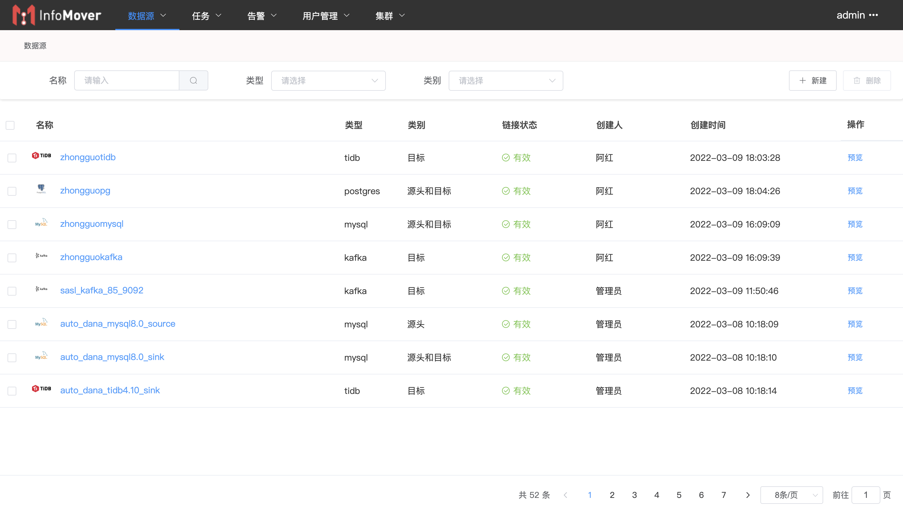
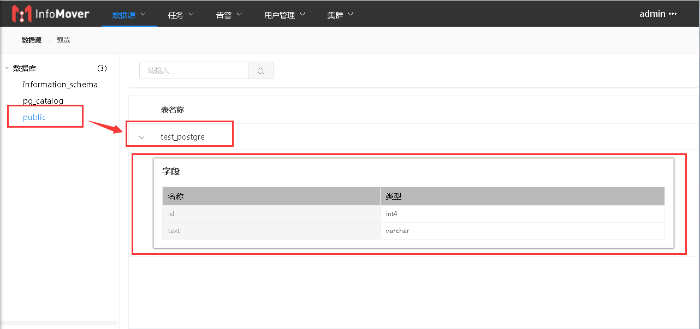
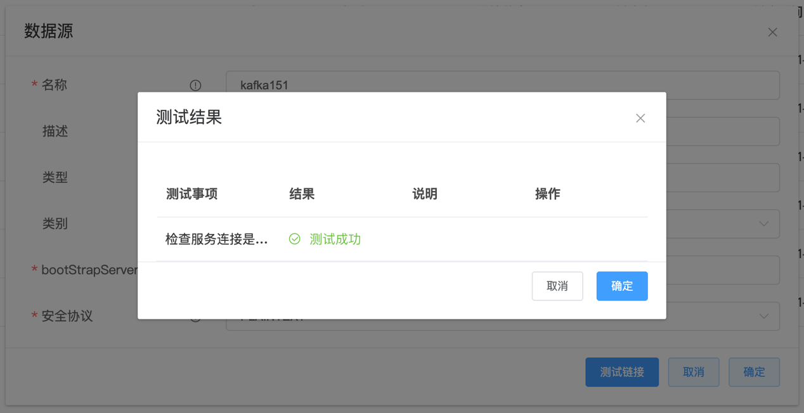

# 数据源
数据源查找，可根据“名称”、“类型”、“类别”进行筛选；
新建数据源，新增一个数据源；
删除数据源，删除已有的数据源。

# 新建数据源
目前支持配置的数据源类型为：
可作为源端和目标端：
- Oracle 11g/12c/19c
- MySQL 5.7/8.0
- PostgreSQL 9.6/10/11/12/13/14
仅作为目标端：
- TiDB 4.0.10
- Kafka
点击“新建”，选择新增数据源类型：
# Oracle数据源配置
# 参数说明及配置
| 参数名称 | 输入示例 | 参数解释 |
|---|---|---|
| 名称 | Oracle-demo | 数据源名称，必填，为唯一标识 |
| 描述 | OracleDemo数据源配置 | 数据源描述，非必填 |
| 类型 | oracle | 数据源类型，默认选择Oracle |
| 类别 | 源头和目标 | 数据源类别，选择项 源头和目标：可同时作为输入源与输出源 源头：只可作为输入源 目标：只可作为输出源 仅做采集的用户建议配置为“源头” |
| 主机名或IP地址 | 10.51.135.186 | 数据库主机 |
| 用户名 | c##dbzuser | 数据库用户 |
| 密码 | dbz | 数据库密码 |
| 数据库名称 | ORCL | 数据库实例名称 |
| 是否过滤系统schema | true | 默认true，屏蔽系统变更 |
| 端口 | 1521 | 访问端口 |
| 版本 | 11g.x | 数据库版本，可选11g.x/12c.x/19c.x |
| PDB名称（配合CDB使用） |
点击“测试链接”看查看链接参数填写是否正确，对于可作为数据源的数据库链接会验证数据库的采集条件是否满足配置要求：
# 数据链接预览
点击“预览”进入数据源预览页面，可选择对应的库表查看表结构：
# MySQL数据源配置
采集权限要求： grant SELECT, RELOAD, SHOW_DATABASES, REPLICATION CLIENT, REPLICATION SLAVE on *.*
# 参数说明及配置
| 参数名称 | 输入示例 | 参数解释 |
|---|---|---|
| 名称 | MySQL-demo | 数据源名称，必填，为唯一标识 |
| 描述 | MySQLDemo数据源配置 | 数据源描述，非必填 |
| 类型 | mysql | 数据源类型，默认选择mysql |
| 类别 | 源头和目标 | 数据源类别，选择项 源头和目标：可同时作为输入源与输出源 源头：只可作为输入源 目标：只可作为输出源 仅做采集的用户建议配置为“源头” |
| 主机名或IP地址 | 10.51.135.186 | 数据库主机 |
| 用户名 | root | 数据库用户 |
| 密码 | ruifan123 | 数据库密码 |
| 数据库名称 | infomover | 数据库实例名称 |
| 是否过滤系统schema | true | 任务配置时剔除系统schema |
| 端口 | 3306 | 访问端口 |
| 版本 | 5.7.x | 数据库版本，可选5.6.x/5.7.x/8.0.x |
| 数据库时区 | UTC |
点击“测试链接”看查看链接参数填写是否正确，对于可作为数据源的数据库链接会验证数据库的采集条件是否满足配置要求：
# 数据链接预览
点击“预览”进入数据源预览页面，可选择对应的库表查看表结构：
# PostgreSQL数据源配置
# 参数说明及配置
| 参数名称 | 输入示例 | 参数解释 |
|---|---|---|
| 名称 | PostgreSQL-demo | 数据源名称，必填，为唯一标识 |
| 描述 | PostgreSQLDemo数据源配置 | 数据源描述，非必填 |
| 类型 | postgres | 数据源类型，默认选择postgres |
| 类别 | 源头和目标 | 数据源类别，选择项 源头和目标：可同时作为输入源与输出源 源头：只可作为输入源 目标：只可作为输出源 仅做采集的用户建议配置为“源头” |
| 主机名或IP地址 | 10.51.135.186 | 数据库主机 |
| 用户名 | infomove | 数据库用户 |
| 密码 | 123456 | 数据库密码 |
| 数据库名称 | infomovetest | 数据库实例名称 |
| 是否过滤系统schema | true | 任务配置时剔除系统schema |
| 端口 | 5432 | 访问端口，默认5432 |
| 版本 | 13.x | 数据库版本，可选9.6.x/10.x/11.x/12.x/13.x/14.x |
点击“测试链接”看查看链接参数填写是否正确，对于可作为数据源的数据库链接会验证数据库的采集条件是否满足配置要求：
# 数据链接预览
点击“预览”进入数据源预览页面，可选择对应的库表查看表结构：

# TiDB数据源配置
# 参数说明及配置
| 参数名称 | 输入示例 | 参数解释 |
|---|---|---|
| 名称 | tidb-demo | 数据源名称，必填，为唯一标识 |
| 描述 | Tidb Demo数据源配置 | 数据源描述，非必填 |
| 类型 | tidb | 数据源类型，默认选择tidb |
| 类别 | 目标 | 数据源类别，选择项 源头和目标：可同时作为输入源与输出源 源头：只可作为输入源 目标：只可作为输出源 Tidb目前仅作为目标使用 |
| 主机名或IP地址 | 10.51.135.186 | 数据库主机 |
| 用户名 | infomove | 数据库用户 |
| 密码 | 123456 | 数据库密码 |
| 数据库名称 | infomovetest | 数据库实例名称 |
| 是否过滤系统schema | true | 任务配置时剔除系统schema |
| 端口 | 4000 | 访问端口，默认4000 |
| 版本 | 4.0.10 | 数据库版本，可选4.0.10 |
| 数据库时区 | UTC | 数据库时区，可选UTC、GMT+8 |
点击“测试链接”看查看链接参数填写是否正确，对于可作为数据源的数据库链接会验证数据库的采集条件是否满足配置要求：
# 数据链接预览
点击“预览”进入数据源预览页面，可选择对应的库表查看表结构：
# Kafka数据源配置
# 参数说明及配置
| 参数名称 | 输入示例 | 参数解释 |
|---|---|---|
| 名称 | Kafka-demo | 数据源名称，必填，为唯一标识 |
| 描述 | Kafka-Demo数据源配置 | 数据源描述，非必填 |
| 类型 | kafka | 数据源类型，默认选择kafka |
| 类别 | 目标 | 数据源类别，选择项 源头和目标：可同时作为输入源与输出源 源头：只可作为输入源 目标：只可作为输出源 Kafka仅可作为目标端。 |
| bootStrapServers | kafka-node-01:9092,kafka-node-02:9092 | Kafka连接地址，多个节点以英文逗号“,”分隔 |
| 安全协议 | SASL_PLAINTEXT | 安全协议类型，选择项 可选SASL_PLAINTEXT、PLAINTEXT |
| 以下为SASL_PLAINTEXT配置内容 | ||
| 验证机制 | SCRAM-SHA-256 | 验证机制，选择项 可选SCRAM-SHA-256、SCRAM-SHA-512、PLAIN |
| 登录模式 | ScramLoginModule | 登录模式，选择项 可选ScramLoginModule、PlainLoginModule |
| 用户名 | kuser | Kafkay登录用户 |
| 密码 | user@10 | 登录密码 |
SASL_PLAINTEXT配置项：
点击“测试链接”看查看链接参数填写是否正确：

# 数据链接预览
点击“预览”进入预览页面，可选择对应的topic查看topic参数：